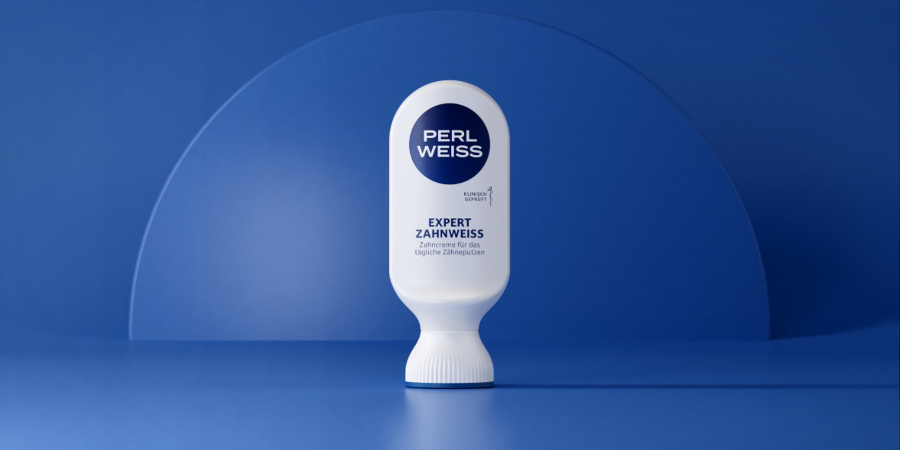

PERLWEISSPROJEKT EINBLENDEN
BEISPIELTEXT · PROJEKTDETAILS ABZUSTIMMEN
Das gezeigte PERLWEISS Motiv bietet einen Einstieg in die Frage, wie eine Verpackung Markenidentität und Produktinformation verbindet. Bei Pflegeprodukten treffen unterschiedliche Anforderungen aufeinander: Die Marke soll erkennbar bleiben, die Anwendung verständlich werden und die einzelne Variante im Sortiment ihren Platz finden.
Für eine ausführliche Projektbeschreibung würden hier die tatsächliche Ausgangssituation, die vereinbarten Ziele und der konkrete Beitrag von brand.pack erläutert. Dazu gehören die relevanten gestalterischen Entscheidungen und ihre Umsetzung auf der Verpackung. Die finale Fassung wird anhand des Projektbriefings ergänzt. So entsteht eine nachvollziehbare Referenz, die nicht nur das Ergebnis zeigt, sondern auch erklärt, welche Aufgabe dahinterstand.